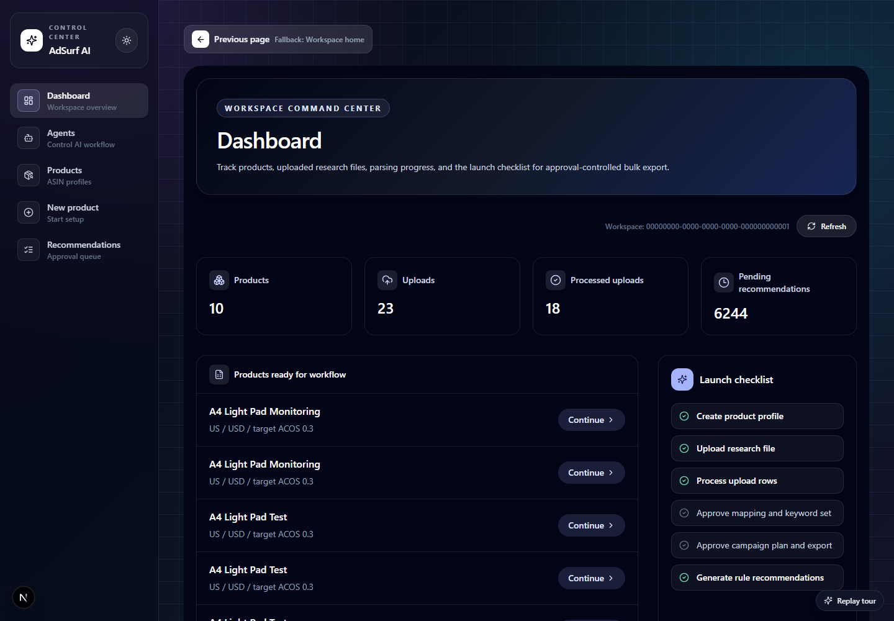
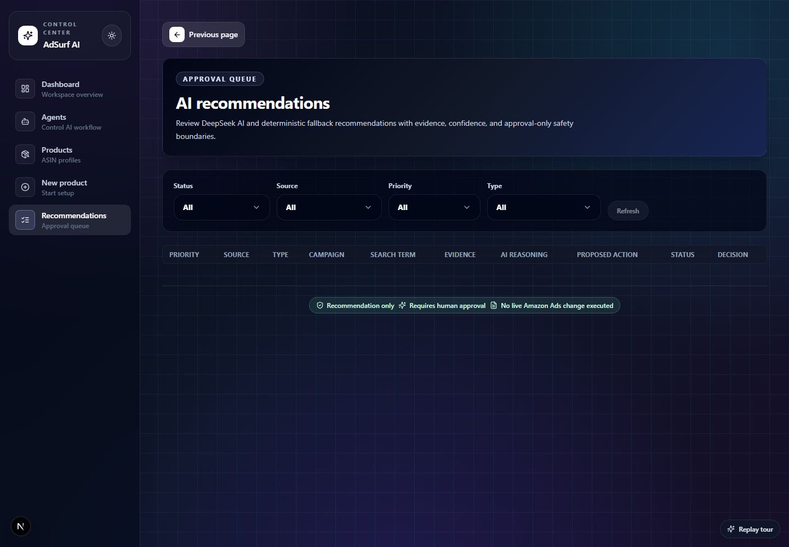
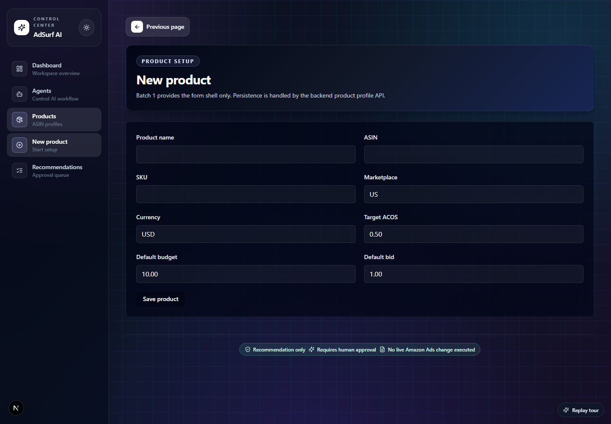
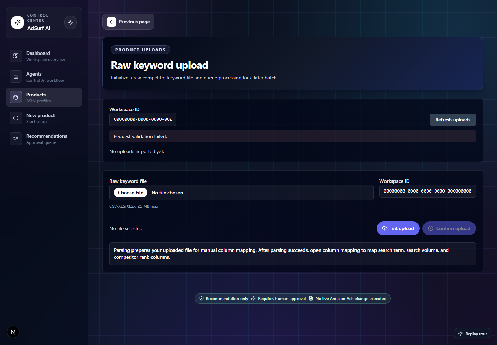
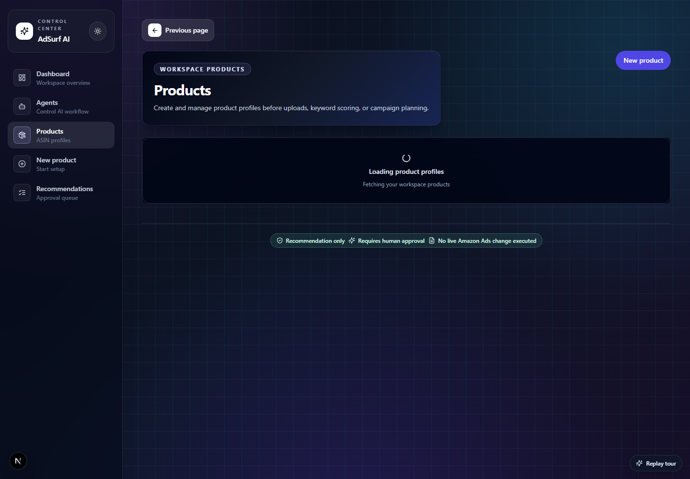
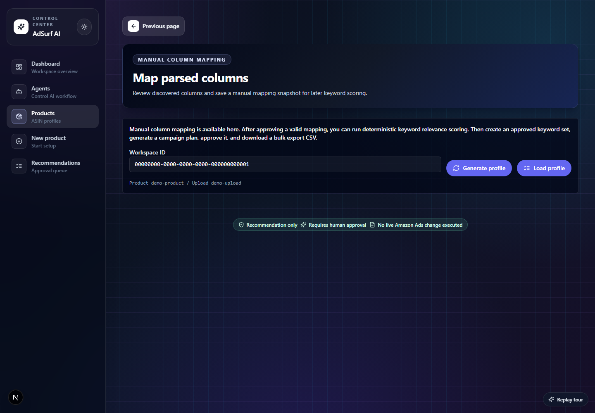
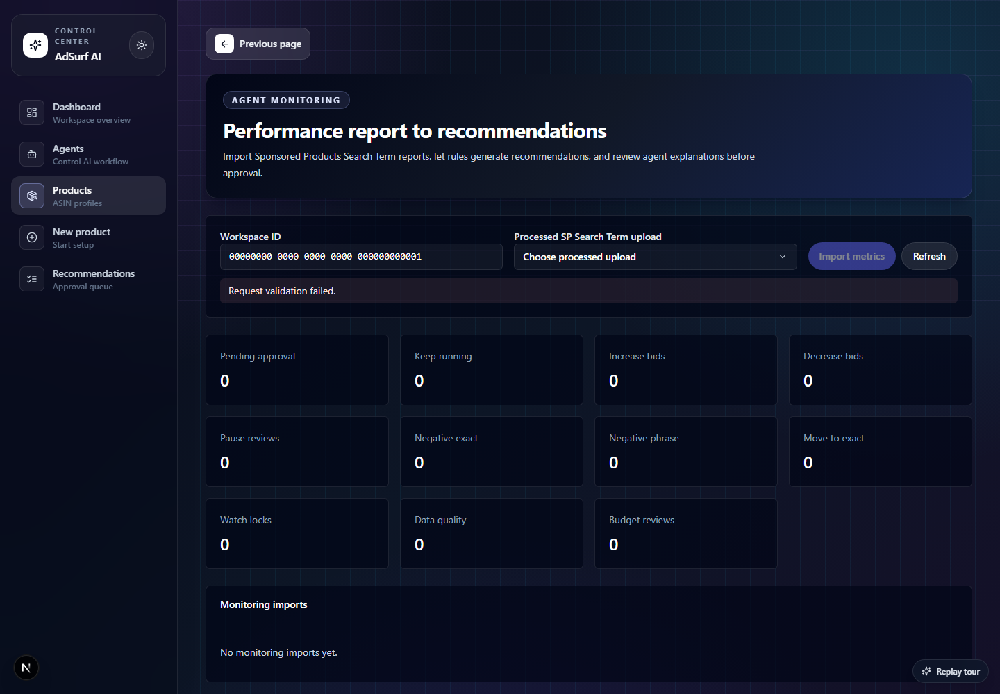
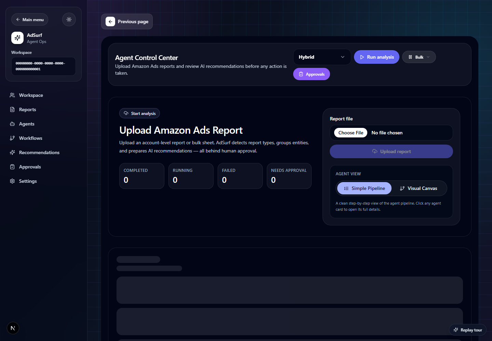
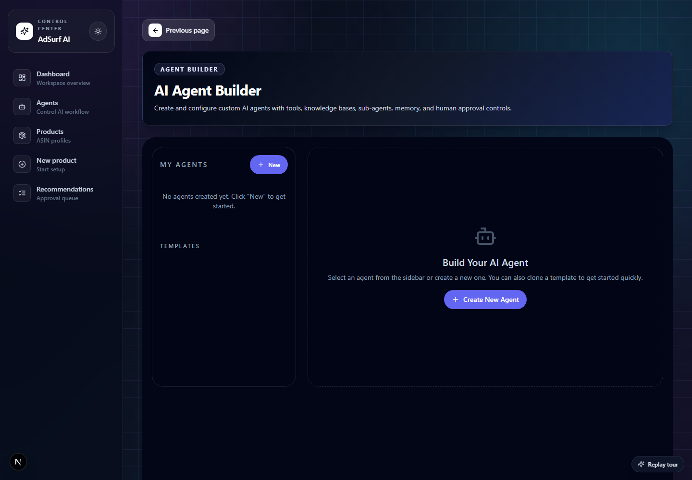

A mentor-style practical handbook for sellers, agencies, analysts, and approvers. Learn what to do, why it matters, when to use each path, where to click, and how every screen connects from first setup to approval-controlled export.
AdSurf is an Amazon Ads AI Automation Control Center for sellers and agencies. It helps a user move from competitor keyword files and Amazon Ads performance reports into reviewed keyword lists, campaign plans, bulk sheet exports, monitoring insights, and approval-controlled recommendations.
Deterministic rule services score keywords, group campaigns, calculate metrics, and generate fallback recommendations.
AI can recommend, summarize, map, and explain evidence. AI output is bounded by structured schemas and validation.
Human approval is required before customer-impacting actions, exports, recommendation decisions, or future live execution.
| Role | Best Use | Typical Actions |
|---|---|---|
| Owner | Workspace governance | Manage access, approvals, audit posture, product defaults. |
| Admin | End-to-end operations | Create products, upload files, generate plans, approve exports. |
| Analyst | Preparation and review | Map columns, score keywords, draft campaign plans, inspect evidence. |
| Approver | Decision control | Approve/reject keyword sets, campaign plans, recommendations, and exports. |
| Viewer | Read-only visibility | Inspect dashboards, reports, recommendations, monitoring, and audit evidence. |

A spreadsheet enters on the left. Each station makes the data more trustworthy. The final output is not a secret AI action; it is a reviewed recommendation, campaign plan, or bulk sheet that a human can approve with confidence.
| Quality | What It Looks Like | What The User Should Do |
|---|---|---|
| Best | Product profile complete, processed file, approved mapping, low parse errors, clear evidence, approval note saved. | Continue to campaign plan, recommendations, or export. |
| Good | Most fields are clear, a few optional columns missing, deterministic fallback still works. | Continue, but document assumptions in approval notes. |
| Fair | File parses but column meaning is unclear or data quality warnings appear. | Slow down, inspect samples, remap, or upload cleaner data. |
| Failed | Upload failed, required mappings missing, no approved keywords, or recommendation evidence is incomplete. | Do not approve. Fix the earlier station first. |
Every page follows the same pattern: orientation at the top, action controls near the workflow area, evidence in panels or tables, and safety reminders before decisions. Once you learn this pattern, every page becomes easier.

Start at the page header, then look for the primary workflow control. Do not begin in the table until you know which workflow state you are in.
Look for source file, mapping, metrics, reasoning, proposed action, status, and safety copy. If one is missing, approval is premature.
The product is the anchor. If the product context is weak, later recommendations become harder to trust. Treat product setup like writing the label on every future upload, keyword, campaign plan, and recommendation.

| Micro-Step | What You Do | Why It Matters | Common Mistake |
|---|---|---|---|
| 1 | Enter a clear product name. | Approvers need to recognize the product without opening raw files. | Using “test” or vague names like “product 1”. |
| 2 | Add ASIN when known. | Helps future product resolution and account-level report matching. | Mixing parent and child ASINs without a naming note. |
| 3 | Add SKU when useful. | Agencies often work from SKU lists rather than ASIN-only workflows. | Leaving SKU blank when internal reports depend on it. |
| 4 | Set marketplace and currency. | Metrics, budgets, and exports must match the ad account context. | Using USD defaults for a non-US account without documenting it. |
| 5 | Set target ACOS. | Recommendations use profitability context when evaluating performance. | Entering “50” instead of “0.50”. |
| 6 | Set default budget and bid. | Campaign plans need safe starting values. | Leaving unrealistic default bids that would make export review harder. |
An upload is not a decision. It is evidence intake. Your job is to get the right file into the right product, confirm parsing, and then wait until AdSurf can show row counts and column evidence.

| Quality | Upload Example | Mentor Guidance |
|---|---|---|
| Best | Correct product, clear filename, supported file type, processed status, expected row count. | Proceed to mapping. |
| Good | Extra columns are present, but required keyword/report fields exist. | Proceed, then map carefully. |
| Fair | File parses but row errors or data-quality warnings appear. | Inspect before approving mapping. |
| Failed | Wrong file type, wrong product, failed parsing, missing required report columns. | Stop and re-upload a clean file. |
Mapping is where users often move too fast. Slow down here. A beautiful campaign plan from a wrong mapping is still wrong. Use the column profile like a teacher uses examples: source column name, normalized name, inferred type, and sample values.
Column names can be misleading. Sample values reveal whether a column is a keyword, rank, sales metric, or campaign label.
Search term and search volume are required for keyword scoring; performance fields are required for monitoring recommendations.
Approval freezes the meaning of the source file for later scoring.
The effective status includes rule output plus any justified human override.
Only override when you can explain why the rule result is not appropriate for this product.
The locked set is the reviewed input for campaign plans.
| If You See | It Means | Do This |
|---|---|---|
| No profile | AdSurf has not summarized columns yet. | Generate profile before mapping. |
| Mapping invalid | A required canonical field is missing or inconsistent. | Fix field choices and save again. |
| Scoring unavailable | Mapping is not approved yet. | Approve valid mapping snapshot. |
| No approved candidates | Rules rejected all candidates or mapping is wrong. | Inspect mapping and candidate evidence before overriding. |
Approving a recommendation is not clicking “yes.” It is saying, “I understand the evidence, I accept the risk, and I want this recommendation recorded as a human decision.”
| Recommendation Type | When It Appears | What To Check Before Approval |
|---|---|---|
| Increase bid | Efficient traffic shows cautious scaling potential. | Sales, orders, ACOS, ROAS, confidence, budget pressure. |
| Decrease bid | Spend exists, sales exist, but efficiency is weak. | Whether lower bid is better than pause or watch lock. |
| Pause review | High-risk spend without enough return. | Learning period, conversion lag, product launch context. |
| Negative exact/phrase | Search term waste or broad pattern waste is detected. | Term relevance, match type, future discovery value. |
| Move to exact | Non-exact search term performs well. | Volume, conversion reliability, duplication risk. |
| Data quality review | Evidence is incomplete or inconsistent. | Do not approve optimization until report quality improves. |
Best path: Product → Upload competitor file → Mapping → Scoring → Approved keyword set → Campaign plan → Export.
Fast launch structure, deterministic scoring, clear approval trail, bulk sheet ready.
Competitor data may not reflect your conversion performance yet. Review relevance carefully.
Best path: Upload Sponsored Products report → Monitoring → Recommendations → filter high/critical → review evidence → approve/reject.
Uses actual account evidence, supports negative keyword and pause-review decisions.
Bad date ranges or missing columns can create misleading recommendations.
Best path: Agents → Upload account report → Hybrid mode → Run analysis → inspect workflow → send recommendations to approval.
Best for many campaigns/products, gives trace events and agent-stage visibility.
Needs disciplined review because account-level uploads can span many entities.
Best path: Do not approve yet. Check source file, mapping, evidence, rule/AI source, confidence, and business context. Reject or request better data if evidence is weak.
Protects account quality and audit trust.
Slower than blindly approving, but safer and aligned with the product mission.
| Page | Purpose | Use When |
|---|---|---|
| Dashboard | Workspace command center | You want the current health, product counts, uploads, recommendations, and checklist. |
| Agents | Agent workflow control | You want to upload an account report, run analysis, inspect agent status, or view trace events. |
| Products | Product profile list | You want to create or open product-level workflows. |
| New product | Product setup | You are onboarding a new ASIN/SKU or product line. |
| Product detail | Product status and next actions | You want to move to uploads, mapping, monitoring, or campaign planning. |
| Uploads | File intake and parse status | You have competitor research or Amazon Ads report files to process. |
| Mapping | Column mapping, scoring, campaign generation, export | You need to turn parsed files into reviewed keywords and bulk sheets. |
| Monitoring | Performance report imports | You need recommendations from Sponsored Products Search Term reports. |
| Recommendations | Approval queue | You need to approve/reject AI or deterministic recommendations with evidence. |
| Agent Builder | Custom agent configuration | You need to create or configure reusable agent templates and tools. |
Every app page includes a professional previous-page button. It uses internal session history first and deterministic route fallback for direct deep links.
Use light, dark, or system theme. The app is optimized for a dark SaaS control-room style that matches the Agent Control Center.

Product profiles store the default context used later by scoring, campaign planning, and export generation. Create one profile per Amazon product or product strategy unit.
| Field | What To Enter | Practical Guidance |
|---|---|---|
| Product name | Human-readable product label | Use a name sellers and approvers recognize instantly. |
| ASIN | Amazon ASIN when available | Useful for matching reports and product resolution. |
| SKU | Internal SKU when available | Helpful for agency or multi-product operations. |
| Marketplace | Default is US | MVP assumes Amazon US unless configured otherwise. |
| Currency | Default is USD | Use the same currency as uploaded ad reports. |
| Target ACOS | Example 0.50 | Used to evaluate performance and recommendations. |
| Default budget | Daily campaign budget | Used as a starting point for generated campaign plans. |
| Default bid | Starting keyword bid | Used when generating manual Sponsored Products campaign rows. |
Uploads are the first operational step after product setup. The app accepts CSV, XLS, and XLSX files, preserves upload metadata, stores file bytes, and queues parsing.
| Status | Meaning | User Action |
|---|---|---|
| initialized | Metadata exists but file is not confirmed | Confirm upload after selecting the file. |
| queued_for_processing | File is waiting for parser worker | Wait or run the local worker in development. |
| processing | Parser is reading rows and normalizing data | Do not remap yet; wait for completion. |
| processed | Rows are parsed and ready for mapping | Open the mapping workflow. |
| failed | Parser could not complete | Review file type, file size, missing sheets, or row errors. |
Use when preparing campaigns from keyword or competitor rank files. Requires search term, search volume, and competitor rank style columns for scoring.
Use when monitoring running ads. Best reports include campaign, ad group, targeting, customer search term, spend, sales, orders, clicks, impressions, ACOS, ROAS, CTR, CPC, and CVR.
The mapping page is the operational bridge between raw spreadsheets and rule-backed keyword decisions. Nothing should be scored until a user has reviewed and approved the mapping snapshot.

| Concept | How It Works | Why It Matters |
|---|---|---|
| Deterministic scoring | Rules assign relevance status and score from mapped source fields. | Reliable fallback and auditable decisions. |
| Rejected scores | Scores 0, 1, and 2 are rejected by default. | Prevents weak terms from entering campaign plans. |
| Manual override | User can approve or reject with a required reason. | Captures expert judgment without hiding rule output. |
| Approved keyword set | Frozen snapshot of effective approved candidates. | Campaign plans must use reviewed inputs, not mutable draft rows. |
Campaign generation turns locked approved keyword sets into Sponsored Products manual campaign structures. The plan must be approved before export. The export must be explicitly approved before download.
| Approved Keyword Count | Campaign Behavior | Recovery If Blocked |
|---|---|---|
| 0 | Campaign generation is blocked | Review rejected terms, adjust mapping, upload better research, or add justified overrides. |
| 1 | Hero-only plan | Use for minimal launch or collect more terms before export. |
| 2-7 | Hero plus one group from remaining terms | Review grouping and negatives before approval. |
| 8+ | Hero plus grouped campaigns of 5-7 terms | Inspect all grouped campaigns and negative rows. |
Monitoring is for post-launch performance review. Upload a Sponsored Products Search Term report, process it, and create a monitoring import from a product's monitoring page.

| Monitoring Output | Meaning | What To Do |
|---|---|---|
| Pending approval | Recommendations are ready for human decision | Open Recommendations and review evidence. |
| Keep running | No stronger action is warranted | Approve if evidence supports learning or stability. |
| Bid recommendations | Increase/decrease bid suggestions | Check spend, sales, orders, ACOS, and confidence before deciding. |
| Negative recommendations | Exact or phrase wasted-spend suggestions | Review search term evidence before approving. |
| Data quality review | Missing, inconsistent, or limited report data | Fix report columns or upload a cleaner report. |
The Recommendations page is where approvers inspect evidence, filter the queue, and approve or reject each recommendation with a note. Approval records the decision in the app; it does not execute live Amazon Ads changes.
| Filter | Options | Use It To |
|---|---|---|
| Status | Pending approval, Approved, Rejected | Separate open decisions from history. |
| Source | DeepSeek AI, Fallback rules, Deterministic rules | Understand whether AI or deterministic logic produced the recommendation. |
| Priority | Critical, High, Medium, Low | Work urgent risk or opportunity first. |
| Type | Keep running, Increase bid, Decrease bid, Pause review, Negative exact, Negative phrase, Move to exact, Watch lock, Data quality review, Budget review | Focus on a specific optimization class. |
The Agent Control Center is the account-level operations view. It can upload Amazon Ads reports or bulk sheets, detect report types, group entities, create workflow runs, and show agent status, trace events, templates, approvals, and recommendations.

The Agent Builder is for reusable agent configurations. It supports agent templates, tools, knowledge bases, sub-agent teams, memory settings, test prompts, permissions, and human approval controls.

| Area | Available Options | Good Practice |
|---|---|---|
| Templates | Conservative profitability, growth scaling, wasted spend cleanup, launch review, agency audit | Clone a close template before creating a blank agent. |
| Tools & Actions | Data lookup, report analysis, recommendation creation, approval checkpoint creation | Mark risky tools as dangerous and require approval by default. |
| Knowledge Bases | Docs, rules, product context, playbooks | Keep rule ownership in code; use knowledge for context and explanation. |
| Sub-agents | Research, monitoring, critic, reporting, approval helper | Use sub-agents only when work naturally splits into roles. |
| Memory | Context limit, retention, scope | Keep workspace isolation and avoid storing secrets. |
| Safety | Approval requirement, no-live-execution boundary, permission review | Never grant an agent authority to silently act. |
| Category | Options |
|---|---|
| Canonical roles | owner, admin, analyst, approver, viewer |
| Decision modes | deterministic, ai, hybrid |
| Upload file types | CSV, XLS, XLSX |
| Upload statuses | initialized, queued_for_processing, processing, processed, failed |
| Recommendation statuses | pending_approval, approved, rejected, superseded |
| Recommendation priorities | critical, high, medium, low |
| Recommendation types | keep_running, increase_bid, decrease_bid, pause_review, add_negative_exact, add_negative_phrase, move_to_exact, watch_lock, data_quality_review, budget_review |
| Agent events | queued, started, input prepared, model called, output received, validation passed, fallback used, waiting for human, succeeded, failed, paused, stopped |
| Campaign output | Hero, Exact, Phrase, Broad, Negative Exact, Negative Phrase, bulk sheet rows |
| Symptom | Likely Cause | Fix |
|---|---|---|
| Product list is empty | API, database, workspace access, or migrations | Check API health, database URL, migrations, and workspace membership. |
| Upload stays queued | Worker not running | Run the file-processing worker or local dev processing endpoint. |
| Upload fails | Unsupported file, large file, bad sheet, invalid rows | Use CSV/XLS/XLSX, keep within upload limit, and inspect parser errors. |
| Scoring unavailable | No approved mapping | Generate profile, map required fields, save, and approve mapping snapshot. |
| Campaign generation blocked | No approved keyword set | Run scoring, review candidates, and create a locked approved keyword set. |
| Export blocked | Plan/export lacks approval | Approve campaign plan and export with explicit notes. |
| Monitoring import fails | Wrong report type or missing required report columns | Upload a processed Sponsored Products Search Term report with campaign, ad group, target/search term, spend, clicks, sales, and orders. |
| Recommendations empty | Monitoring worker did not run or evidence invalid | Run monitoring processing and check data-quality warnings. |
| Approval blocked | Missing note or insufficient role | Use owner/admin/analyst/approver role and enter a meaningful decision note. |